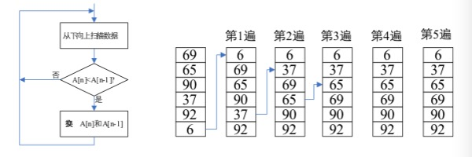
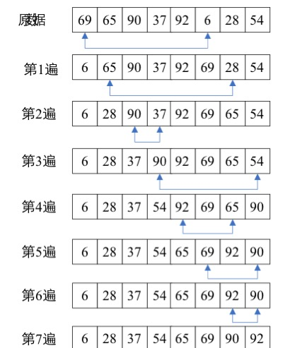
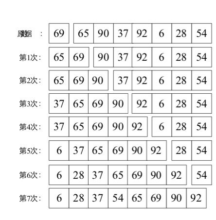

常用的排序算法（Python）
排序算法（Python）
排序分为内部排序和外部排序
内部排序
交换排序、选择排序、插入排序、归并排序
- Google Chrome 对 sort 做了特殊处理。对于长度 <= 10 的数组使用的是插入排序（稳定排序）；对于长度 > 10 的的数组使用的是快速排序（不稳定排序）。

交换排序
冒泡排序（BubbleSort）
- 基本思想：对待排序记录关键字从后往前（逆序）进行多遍扫描，当发现相邻两个关键字的次序与排序要求的规则不相符时，就将这两个记录进行交换。这样，关键字较小的记录将逐渐从后面向前面移动，就像气泡在水中向上浮一样。
- 提升效率，当在某一遍扫描时，发现数据都已经按顺序排列了，就不再进行后续的扫描。

1 | def bubble_sort(arr): |
1 | def bubble_sort_v2(arr): |
快速排序
- 快速排序使用分治策略把待排序的序列分为两个子序列，具体步骤为：
- 从数列中挑出一个元素，称该元素为“基准”；
- 扫描一遍序列，将所有比基准小的元素排在基准前面，所有比基准大的元素排在基准后面；（该操作称为分区操作，分区操作结束后，基准元素所处的位置就是最终排序后的位置）
- 通过递归将各子序列划分为更小的序列，直到把小于基准值元素的子数列和大于基准值元素的子数列排序。
1 | def quick_sort(arr): |
选择排序
直接选择排序
- 基本思想：对 n 个记录进行扫描，选择最小的记录，将其输出，接着在剩下的 n-1 个记录中扫描，选择最小的将其输出…，不断的重复该过程，直到只剩一个记录为止。

1 | def selection_sort(arr): |
堆排序
- 基本思想
插入排序
直接插入排序
- 基本思想：通过构建有序序列，对于未排序数据，在已排序序列中从后向前扫描，找到相应的为止并插入。
- 插入排序在实现上，在从后向前扫描过程中，需要反复的把已排序的元素逐步向后移动，为最新元素提供插入空间。

1 | def insertion_sort(arr): |
希尔排序
- 希尔排序又称为缩小增量排序
- 基本思想：将需要排序的序列划分为若干个较小的序列，对这些序列进行直接插入排序，通过这样的操作可使需要排序的序列基本有序，最后再使用一次直接插入排序。目的是：首先对数量较小的序列进行直接插入排序可提高效率，最后对基本有序的序列进行直接插入排序，也可提高效率，从而使整个排序过程的效率得到提升。

1 | def shell_sort(arr): |
归并排序
- 将两个或多个有序表合成一个有序表
1 | def merge_sort(arr): |